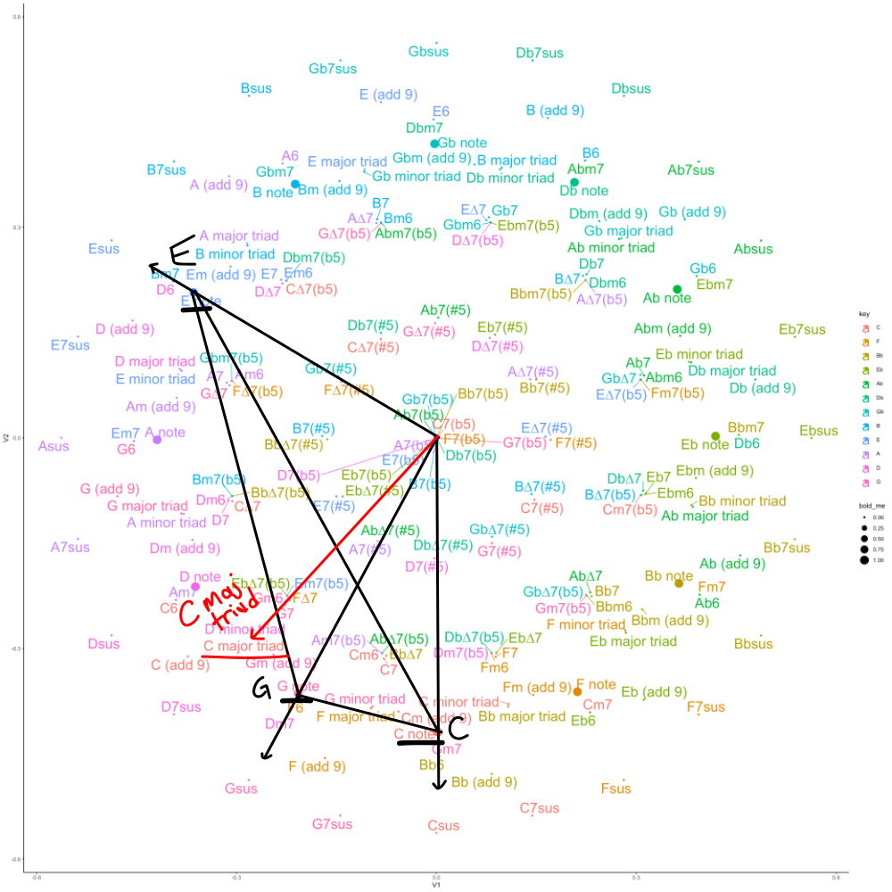
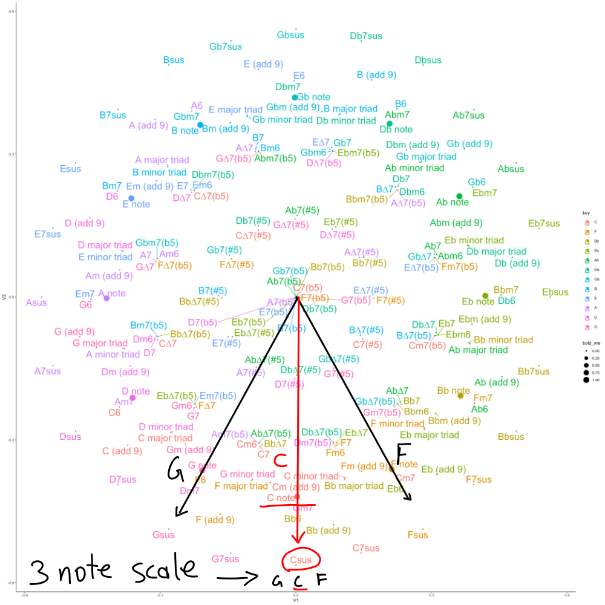
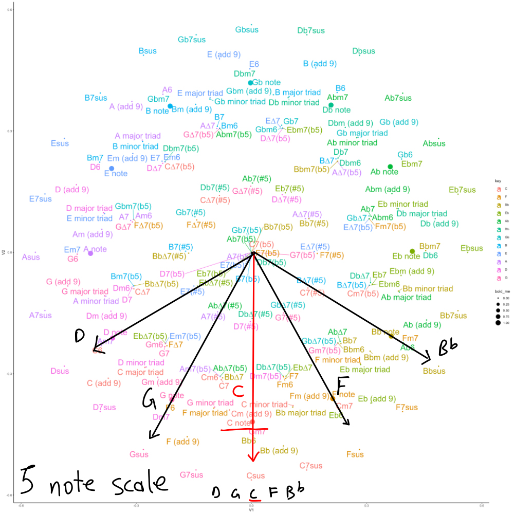
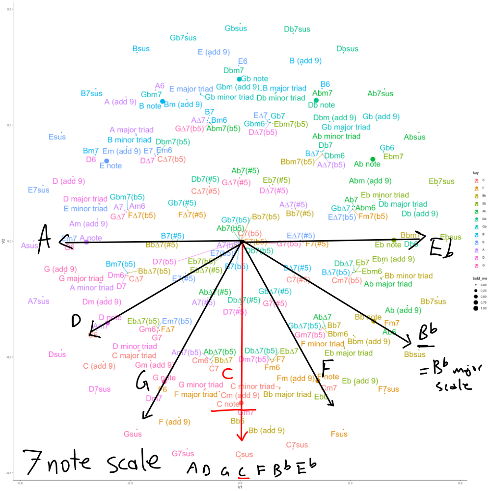
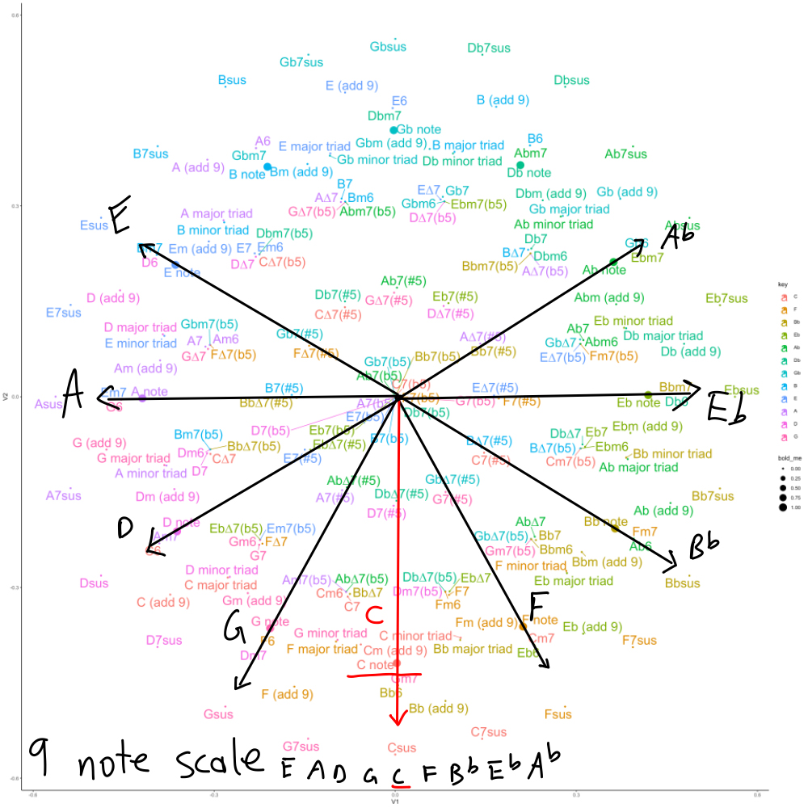

In the last few posts I’ve been making scattered notes about a chord vector space, which represents the elements of individual chords or scales as feature vectors. The feature vectors can then be analyzed in terms of their similarity relationships in high-dimensional geometric space. Although I use similar approaches in some of my cognition lab research, I’m mostly messing about in this context out of curiosity, and with some hope that this exercise may bring usable musical perspectives that I didn’t have before.
Yesterday, I managed to eke out a musical idea from this analysis that I had fun playing on the piano, and this post will attempt to describe how this idea came from the analysis, and also what the idea is.
Visualizing chord space
Skipping over some details, I computed the cosine similarity between every chord in my database and every other chord. This results in a 756 x756 similarity matrix. With a few tricks (multi-dimensional scaling in this case) it’s possible to visualize the similarity relationships between chords in a 2-dimensional space. If I add all the chords into the visualization it get’s too hard to read. Here’s an example with several chords taken out to make it easier to look at it.
Show the code
library(tidyverse)# pre-processing to get the chord vectors# load chord vectorsc_chord_excel <- rio::import("chord_vectors.xlsx")# grab feature vectorsc_chord_matrix <-as.matrix(c_chord_excel[,4:15])# assign row names to the third column containing chord namesrow.names(c_chord_matrix) <- c_chord_excel[,3]# define all keyskeys <-c("C","Db","D","Eb","E","F","Gb","G","Ab","A","Bb","B")# the excel sheet only has chords in C# loop through the keys, permute the matrix to get the chords in the next key# add the permuted matrix to new rows in the overall chord_matrixfor (i in1:length(keys)) {if (i ==1) {# initialize chord_matrix with C matrix chord_matrix <- c_chord_matrix } else {#permute the matrix as a function of iterator new_matrix <-cbind(c_chord_matrix[, (14-i):12],c_chord_matrix[, 1:(13-i)] )# rename the rows with the new key new_names <-gsub("C", keys[i], c_chord_excel[,3])row.names(new_matrix) <- new_names# append the new_matrix to chord_matrix chord_matrix <-rbind(chord_matrix,new_matrix) }}chord_properties <-tibble(type =rep(c_chord_excel$type,length(keys)),key =rep(keys, each =dim(c_chord_matrix)[1]),chord_names =row.names(chord_matrix),synonyms =list(NA),database_chord =FALSE)first_order <- lsa::cosine(t(chord_matrix))# find repeats and build synonym listrepeat_indices <-c()first_occurrence <-c()for(i in1:dim(chord_matrix)[1]){# get the current row evaluate_row <- first_order[i,]# don't count the current item as a repeat evaluate_row[i] <-0# repeats are the ids for any other 1s found repeats <-which(evaluate_row ==1 )if(length(repeats) ==0){ }if(length(repeats) >0){#add to list of repeat items repeat_indices <-c(repeat_indices,repeats)# add synonyms chord_properties$synonyms[i] <-list(synonyms =row.names(chord_matrix)[repeats]) }if(i %in% first_occurrence ==FALSE){if(i %in% repeat_indices ==FALSE){ first_occurrence <-c(first_occurrence,i) chord_properties$database_chord[i] <-TRUE } }}chord_properties <- chord_properties %>%mutate(num_notes =rowSums(chord_matrix),id =1:dim(chord_matrix)[1])# keep only unique chord, recompute similaritieschord_matrix_no_repeats <- chord_matrix[first_occurrence,]first_order_no_repeats <- lsa::cosine(t(chord_matrix_no_repeats))second_order_no_repeats <- lsa::cosine(first_order_no_repeats)# remove scales and individual notesonly_chords <- chord_properties %>%filter(type!="scale", type!="key", database_chord ==TRUE)first_order_chords <- first_order_no_repeats[only_chords$chord_names, only_chords$chord_names]second_order_chords <- second_order_no_repeats[only_chords$chord_names, only_chords$chord_names]
The circle of fifths pops out right away. I put slightly larger dots on the location where individual notes are located in the space. At the bottom is the C note, and then going anti-clockwise we find F, Bb, Eb etc., and going clockwise we get G, D, A, etc.
Chord location based on note vectors
Each of the chords and notes is a point in the multi-dimensional chord space, represented here in a compressed 2-d form. Each point is also a vector representing a direction from the origin. For example, the next graph draws lines from the origin to the C, E, and G notes, showing their respective directions in the space. These notes make up a C major triad, and it is worth considering how the vectors for the individual notes relate to the vector for the chord.

The C major triad vector is an equally weighted average of the sum of it’s note vectors. The point is roughly in the middle of the triangle between G, C, and E. Drawing a line from the origin to that point is where we find the C major triad.
I’ve been looking for musical implications from this graph that offer new (to me) perspectives. Here’s what I’ve come up with so far.
Symmetrical 3 note scale
I’m starting on a C note, and playing Cs across the piano as a kind of drone note. Let’s say this establishes a tonal center in C. And, without any more information, I’m heading in the C direction in musical space.
But, let’s say I want to branch out and add more notes, but also keep the tonal center on C. In the next several graphs I do this in steps by adding an additional note from the circle of fifths, in both directions, to preserve symmetry.
For example, the next graph creates a simple 3 note scale by adding the G and F notes.

Playing a drone C on the piano, and sprinkling in Gs and Fs sounds fun and very “major fifthy”. The CFG triad is a Csus chord (and the Csus chord is located where it should based on it’s constituent note elements). You also get a paired down Gsus7 (GCF) and Fadd9 (FCG) in this scale. The symmetry is fun in that you add notes, but are still going in the same direction.
As I’m playing this type of thing on the piano, and thinking about every note as adding to an accumulating performance vector in chord space, I would have to play these notes (especially F and G) equally frequently to preserve the C direction. If I started playing more Fs, then I would be tilting the performance vector a little bit toward the F note. Musically, this seems like an invitation to start exploring the anti-clockwise direction in terms of the circle of fifths. For example, I could sneak in a Bb, which is the next note past F. This brings in C7sus vibes.
Symmetrical 5 note scale
I’m playing Csus (CFG) around the piano and want to two more notes to make it interesting. But, for now, let’s keep it symmetrical. So, I add D and Bb.

Now I’m having fun droning on C, and sprinkling in F Bb and D G everywhere. The 5 note scale works as a C chord = C9sus (C D9 Fsus GV Bb7), or a Gm7sus chord (and more for the other notes). But, let’s keep going with the idea of adding more notes and keeping the direction symmetrical about C.
7 note symmetrical scale
Adding the next two notes (A and Eb), we get a 7 note scale. This scale is centered on C in terms of equal weighting the other notes on either side of the circle of fifths.

Arranging the notes starting on C, gives: C D Eb F G A Bb, which is the same as a C dorian scale. Or, if I was hammering away on a Bb as the drone note to establish Bb as the tonal center, and then used these same notes (even though they are not symmetrical around Bb), we get the Bb major scale (ionian).
Dare we go to a 9 note scale?
9 note symmetrical scale
Let’s do it by adding the E and Ab.

This is a really fun scale to mess around with, and it’s what I’m spending time on right now.
It’s big and harmonically rich, and helps me connect to understanding chords as compound vectors that go off in some direction in the circle of fifths.
For example, I could play a 5 note C chord with CDFGBb, this type of chord is symmetrical about C.
Which chords would I play for each note in the scale? There are options here, but let’s say I start with C Eb F Ab Bb (Cm7sus#5). This chord works, but it’s direction is centered about Bb. To keep a balance around C, I might want the next chord to shoot off on the other side of the circle of fifths. So, to play D, I could do EA D GC (D7sus (add 13)).
Following that pattern, every other note has a chord that alternates between groups of notes from either side of the circle of fifths (about C).
Chords as adding fifths
Another little practice I am doing is trying to get used to thinking of the above chords as adding notes in terms of the circle of fifths.
For example, I’ll play a C, and think let’s add fifths symmetrically, so that means add FG, and then add BbD. Or, let’s say I want to go more minor, that would be playing a C and adding more fifths on the anti-clockwise side. C FBb G, or go further C FBb Eb G.
When I play these chords I’m also playing them as arpeggios, but playing the notes in terms of the circle of fifths. This brings a sense of direction, and control over direction. Even with something simple like a triad with C, F, and G. I’ll start with C, and I could go F to G, or G to F. The first choice seems to nudge the feeling to one side or the other of the circle of fifths.
I’m assuming that if I practice chords this way I’ll get better at sensing which direction I’m headed in, and what kind of tension is being built when the direction is ambiguous.